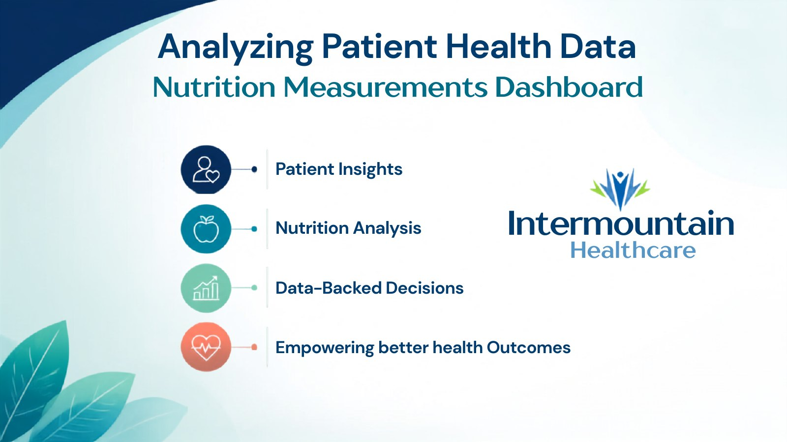
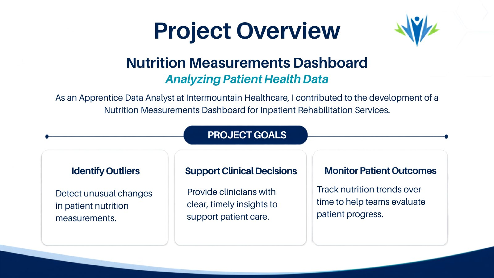
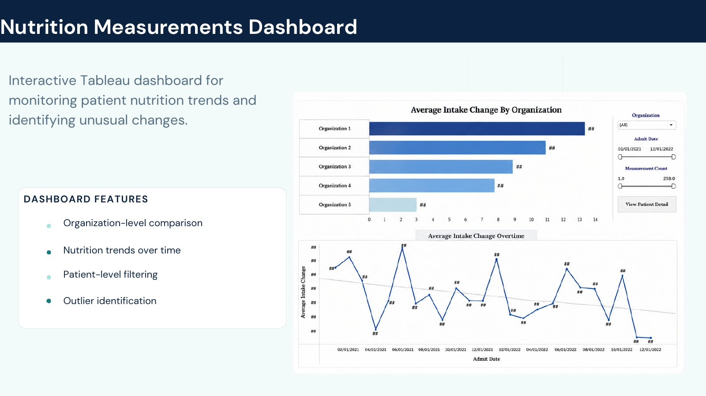
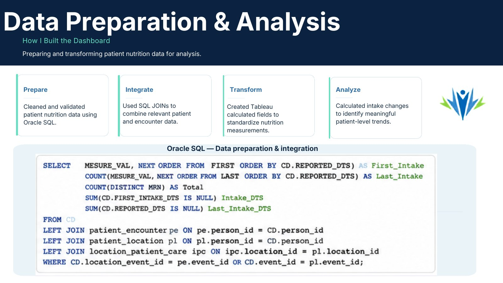
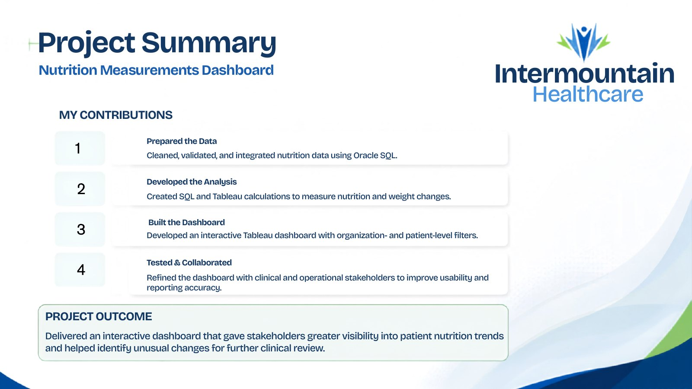

Identify outliers
Detect unusual changes in patient nutrition measurements that deserve clinical review.
Healthcare analytics · Inpatient rehabilitation
A clinical dashboard that makes patient nutrition trends easier to monitor, review, and turn into timely care decisions.

As an Apprentice Data Analyst at Intermountain Healthcare, Camila contributed to a Nutrition Measurements Dashboard for Inpatient Rehabilitation Services.
The work focused on identifying unusual nutrition changes, supporting clinical decisions with timely information, and tracking patient progress over time.
02 · Care-focused goals
The dashboard was designed around the questions clinicians need to answer quickly and confidently.
Detect unusual changes in patient nutrition measurements that deserve clinical review.
Provide clear, timely insights that support patient care and operational conversations.
Track nutrition trends over time so teams can evaluate patient progress.

03 · Dashboard experience
The interactive Tableau dashboard compares trends across organizations, tracks changes over time, and lets users narrow the view to the patient level.

04 · Data preparation
The workflow connected data preparation, integration, transformation, and analysis into one reliable reporting experience.
Prepared patient nutrition data in Oracle SQL for dependable analysis.
Combined patient and encounter data using SQL joins.
Created Tableau calculations to make nutrition measurements consistent.
Calculated intake changes to identify meaningful patient-level patterns.

05 · Contribution and outcome
Camila's contribution spanned the data workflow, dashboard design, and the refinement needed to make the reporting useful in practice.
Cleaned and joined nutrition and encounter data with Oracle SQL.
Created Tableau views with organization and patient-level filtering.
Incorporated clinical and operational feedback to improve usability and reporting accuracy.

Healthcare analytics
The project paired integrated clinical data with an accessible Tableau experience for inpatient rehabilitation teams.